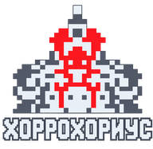

XOR-маятник из Excel (ТРЕУГСЖАТИЯ): каждая вершина пускает вниз конус правила 90, клетка = старое ⊕ левый ⊕ правый родитель. Вершины идут якорь, −1, +1, −2, +2…
Область и шаблон: правый щелчок по битовой области любого цвета создаёт шаблон по выбранному правилу связности; по готовому шаблону — выбирает его. Двойной щелчок снимает заливку области, возвращая цвет исходных битов. Esc снимает выделение шаблона, сохраняя фигуру на поле. «Отмена» и «Повтор» — по центру верхнего меню. Список своих шаблонов справа всегда открыт. При заливке контрастный прицел и рамка показывают точный бит попадания.
СвёрткаГориз: шаг 1 сдвигает всю правую часть на столбец влево, шаг 2 — всю левую на столбец вправо; стороны чередуются, накладываясь на неподвижный центральный столбец через XOR (1 и 1 дают 0). Пустота не меняет бит. Нижний пульт появляется при включении свёртки: ромб запускает и останавливает, стрелки выбирают прямой или обратный ход, −1/+1 делают шаг, верхний ползунок выбирает шаг, пульт задаёт скорость. В конце ход останавливается. Выключение свёртки возвращает исходное поле; раскраска и шаблоны сохраняются. В режиме «Только цифры» заливка красит фон под цифрами, цвета 0 и 1 задаются отдельно.
Это рисунок из нулей и единиц, который строится треугольниками. Каждая новая вершина запускает вниз свой треугольник по правилу 90: значение клетки зависит от двух соседей в строке над ней. Полученный рисунок складывается с уже существующим по XOR — два одинаковых бита дают 0, разные дают 1.
В режиме «лево-право» вершины появляются по очереди: в центре, на один шаг влево, на один вправо, на два влево, на два вправо и дальше. Это движение напоминает маятник и даёт странице её название.
Цвета: светлый — 1, серый — 0. Синий показывает клетку, которая стала единицей, красный — которая стала нулём. Чёрное поле — ещё не заполненные клетки. В группе «Вид» можно оставить только биты, показать цифры или ромбы.
Как начать: в группе «Поле» задай число строк и вершин и нажми «Построить». В «Анимации» можно запускать и останавливать построение, делать по одному шагу и двигать ползунок кадра. «По очереди» добавляет одну вершину, «Пара сразу» — сразу левую и правую.
«Очки» ищут строки начальной двоичной последовательности либо все простые непрерывные серии 11111…, 00000…, 101010… (включая фазу 010101…). Для простых серий задаётся минимальная длина, по умолчанию 5 бит; доступны ряды и диагонали. «Зеркала» показывают симметрию и позволяют выбрать ось для переноса в Соляриус. В «Экспорте» сохраняются картинка PNG и текстовые строки.
Оси: вертикальные, горизонтальные и обе диагонали проверяются на двух решётках через бит. Минимум — 2 строки и 2 бита с каждой стороны. Пустое «до» означает без верхней границы. «Биты осей» отдельно подсвечивает совпадения при масштабе от ×3; «Скрыть оси» в шапке убирает линии и выбор.
Заливка: выбери цвет в группе «Раскраска», включи «Заливку» и нажми на область. Режим «По сторонам» соединяет соседей по сторонам; «Стороны + углы» добавляет диагональное касание; «Только углы» соединяет только через вершины, без перехода через стороны. «Шахматки 0» — то же, но у нулей две шахматные цепочки, соприкоснувшиеся боком, считаются одной областью, а одиночные 0, 00, 000 к ним не добавляются. В этом режиме «Авто» включает живой слой: каждая такая область своим цветом, слой держится при шагах и пересчитывается на каждом кадре, а область сохраняет цвет той, с которой больше всего совпала на прошлом кадре. Повторное «Авто» выключает слой. «Области» в этом режиме считает их по клеткам и называет крупнейшую. «Один бит» красит ровно бит под прицелом и игнорирует зеркальную пару. Повторный щелчок тем же цветом снимает заливку. «Отменить» и «Повторить» работают с заливкой, битами дорожки и шаблонами. «Без краски» убирает краску и изменения битов, оставляя шаблоны на поле; это действие тоже можно отменить. «Области» считает участки текущего изображения. Раскраска автоматически сохраняется в памяти этого браузера и восстанавливается после обновления. «Из памяти» возвращает последнее сохранённое поле вместе с цветами и шаблоном. При смене кадра или вида текущая раскраска скрывается; сохранённая работа остаётся в памяти до следующей раскраски. PNG сохраняет видимый результат отдельным файлом. Обычная цветная заливка не меняет биты; «Инверт-след» меняет рабочие биты дорожки.
Вертикальная раскраска: кнопка переключается 1 → 0 → выкл. Наведи на пиксель: от него вниз проводится вертикаль толщиной в один пиксель, и все связные области выбранного бита, которых она касается, подсвечиваются. Щелчок применяет цвет. Пустой фон не закрашивается. «Зеркально» включено по умолчанию: захватывается и отражённая сторона относительно центра поля. Shift также включает зеркальную пару. Повторный щелчок тем же цветом снимает заливку.
Шаблон цвета: в «Раскраске» выбери цвет, затем в группе «Шаблон» нажми «Взять цвет». «Выше +» увеличивает высоту, «Сдвиг ↓» опускает копию по центру; значения можно вводить числами. «Пропорции» увеличивает и ширину поровну от центра цветной фигуры, не сдвигая её в сторону. Фигуру можно сразу тянуть мышью прямо на холсте; «Свободная ось» переключает свободное движение и движение только по вертикали. «Инверт-след» меняет рабочие биты на пройденных местах: 1 становится чёрным 0, а 0 — белой 1. Пустое поле пропускается; в пределах одной протяжки каждый пройденный пиксель инвертируется один раз. Новые биты используются в цифрах, подсказке, вертикальной раскраске и окраске под шаблоном. След входит в раскраску и PNG, его можно отменить. Копия полупрозрачна, включается в PNG. Статус показывает исходные пиксели PNG, уникальные биты 1/0, точные оси силуэта и биты под видимой частью копии. Оси фигуры проверяются точно по расположению центров выбранных битов в её собственной рамке, чтобы ступеньки отрисовки ромбов не ломали симметрию. Изменение кадра или вида убирает текущий шаблон; «Из памяти» возвращает сохранённую работу. Изменение заливки не меняет уже взятую копию. Наведение в режиме заливки заранее подсвечивает всю будущую область. Мышью на поле: тянуть — двигать по битам, Shift — только по одной оси, Ctrl — тянуть копию, Alt + щелчок у края — зеркальная копия за этот край (край подсвечивается), Alt + тянуть — размер. Delete убирает выбранный шаблон, Ctrl+Z / Ctrl+Y — отменить и повторить. «Линия-зеркало» ставит на поле горизонтальную линию: её тянут мышью, а щелчок по шаблону кладёт его отражение по другую сторону линии.
Сохранить и начать заново: в «Раскраске» кнопка «Сохранить» скачивает файл JSON с полем, краской, изменёнными битами и всеми шаблонами. «Открыть» возвращает эту работу для продолжения; PNG сохраняет картинку. «С нуля» убирает краску, следы и шаблоны с текущего узора, сохраняя библиотеку своих шаблонов. Очистку можно отменить; отдельная копия до неё остаётся в браузере и доступна через «Из памяти».
Несколько шаблонов: «Взять цвет» и нажатие на карточку в «Шаблонах» добавляют фигуру. Включённая карточка показывает её на поле, выключенная скрывает; повторное включение возвращает последнее положение. Активную фигуру выбирают прямо на поле, «Ещё копия» создаёт независимый дубликат, «Убрать с поля» удаляет только выбранную фигуру. Видимость, размер, смещение, прозрачность, след, возврат и цикл окраски у каждой свои. Щелчок по фигуре выбирает её для протяжки; скрытые возвращаются нажатием на карточку в списке. PNG и память браузера сохраняют все видимые фигуры. «Отменить / Повторить» доступны и в «Раскраске», и в «Шаблоне»; одна протяжка — одно действие. История действует в пределах текущего поля и сеанса.
Исходный алгоритм перенесён из Excel, модуль «ТРЕУГСЖАТИЯ». Кнопка «?» в углу включает отдельные подсказки к командам.
Перетаскивание шаблона: после «Взять цвет» управление включено сразу. Без клавиш — сдвиг вверх-вниз: исходная заливка снимается, только на её месте биты один раз заменяются 1↔0. По пути поле не меняется. «Без следа» переносит фигуру свободно и снимает исходную заливку без изменения битов; так же работает Alt при переносе. Shift — пропорциональное увеличение от центра (тяни от центра наружу). Ctrl + перетаскивание создаёт независимую копию и двигает её свободно; исходная фигура остаётся на месте. Копия появляется только при протяжке, не при одиночном щелчке. «Свободная ось» разрешает движение мышью влево-вправо и вверх-вниз. Когда кнопка выключена, движение идёт только по видимой пунктирной вертикальной оси; в PNG эта вспомогательная линия не входит. «Инверт-след» отдельно включает прежнюю дорожку. Внизу первым показано пересечение: сколько пикселей силуэта накрыло чёрные 0, белые 1 и пустоту, а также сдвиг X/Y в пикселях рисунка. Счётчик учитывает текущие изменённые биты, не зависит от экранного увеличения и считает только часть фигуры на поле. Далее показаны новые чёрные/белые пиксели на исходном месте и изменённые биты под текущей фигурой. Тонкий чёрный контур виден при всех преобразованиях. «Туда / назад» возвращает исходное положение и размер; повторный — прежнее преобразование, без дополнительного следа. «Под ним: 1 / 0» по очереди красит только выбранные биты внутри силуэта текущим цветом.
Библиотека «Шаблоны»: здесь только свои фигуры. Каждый взятый цвет автоматически добавляется в отдельный список. «Сохранить» записывает текущую фигуру и преобразование с указанным именем. Изменение имени создаёт отдельную запись. Все свои шаблоны видны карточками с миниатюрами. Можно включить несколько одновременно и сразу тянуть каждый мышью. У карточки четыре значка: сохранить изменения фигуры на поле, скачать этот шаблон, удалить с подтверждением и изменить цвет. Правая кнопка на карточке или фигуре — переименовать, Enter сохраняет, Esc отменяет. «Скачать все» выгружает библиотеку в JSON, «Загрузить» добавляет шаблоны из файла. Библиотека не очищается при перестроении поля. Сведения о размере, сдвиге, битах и симметрии показаны мелким текстом внизу. Рядом «Сохранить» записывает выбранную фигуру в библиотеку, «Цвет» меняет только цвет этой фигуры; смену цвета можно отменить.